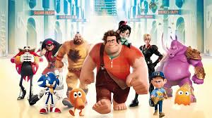

About Ralph
Ralph is awesome! He is an 8-bit videogame bad guy who travels the length of an arcade to prove that he is a good guy.
Ralph and his friends
Ralph's Characteristics
- He has got big hands
- He is treated as bad ass
- He is trying to be a good guy
Ralphs Friends
Ralph has some awesome friends. I think his best friend is Glitch.She's awesome.Click on the links below to read a little more abou them .